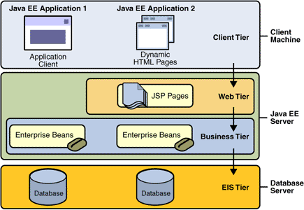
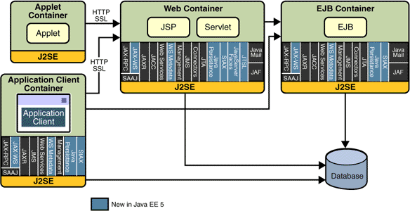

¿Qué es Java Enterprise?
Según la definición de Sun, Java Enterprise Edition (Java EE) es el estándar de la industria para desarrollar applicaciones Java portables, rebustas, escalables y seguras en el lado del servidor (server-side). Basado en la solidez de Java SE (Java Standard Edition), Java EE proporciona APIs para servicios web, modelo de componetes, gestión y comunicación que hacen lo convierten en el estándar de la industria para implementar apliaciones Web y Web 2.0 y aplicaciones con arquitectura orientada a servicios (SOA).
Java EE proporciona una arquitectura multi-capa. La capa cliente puede estar constituida por aplicaciones Java de escritorio o navegadores HTML. Las capas proporcionadas por Java EE propiamente dicha son las capas Web (mediante las tecnologías Servlets, JSP y JSF) y las capas de Negocio (mediante tecnologías como EJB, JMS o Web Services). Por último, estas capas se comunican con una capa de datos (base de datos o aplicaciones y sistemas legacy).
La siguiente figura muestra las APIs y tecnologías que forman parte de Java EE.
En el especialista nos vamos a centrar en:
- JDBC (ahora en Java SE)
- Servlets
- JSP
- JavaServer Faces
- EJB
- Java Persistence
- Web Services
Además de estas tecnologías incluidas en el estándar, existen un conjunto de tecnologías Java muy maduras y de amplia utilización en la industria que también estudiaremos con cierta profundidad como Struts, Hibernate o Spring.